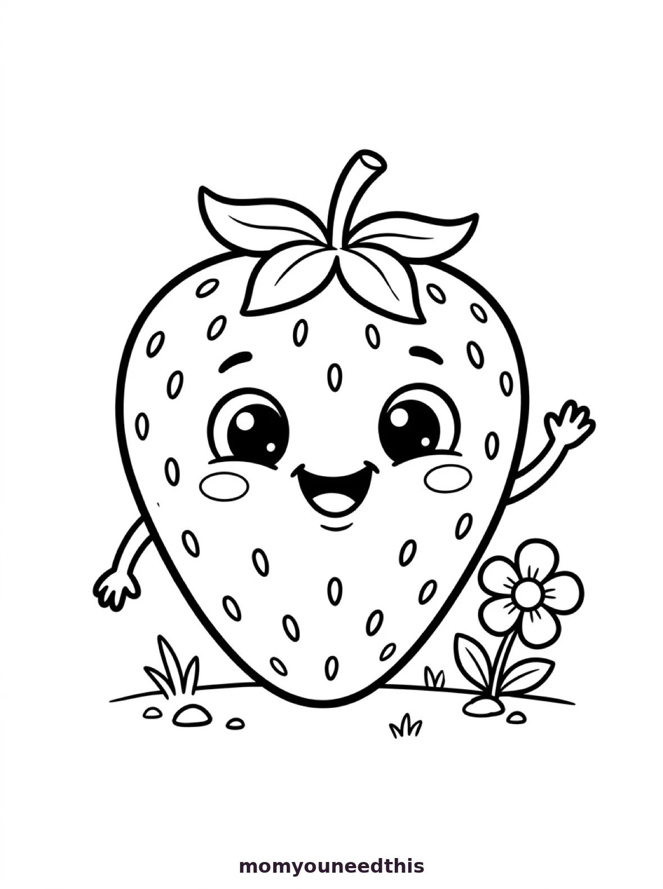
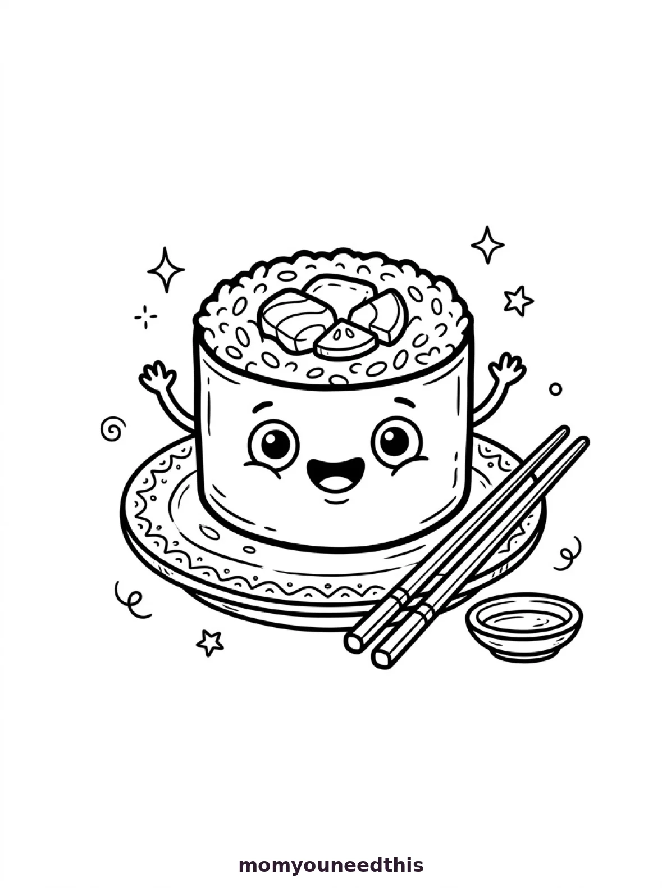
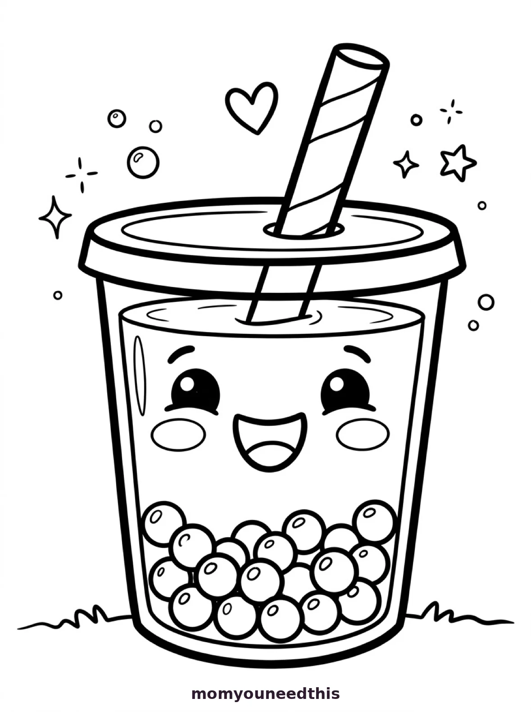
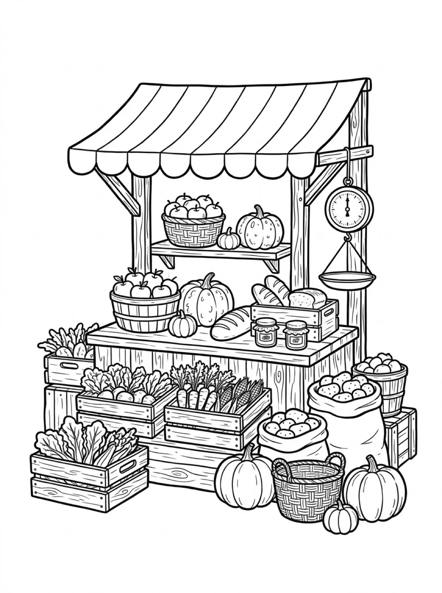
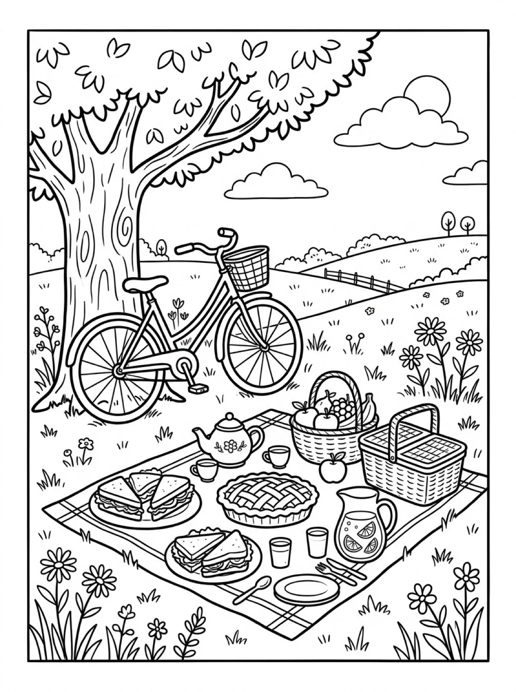
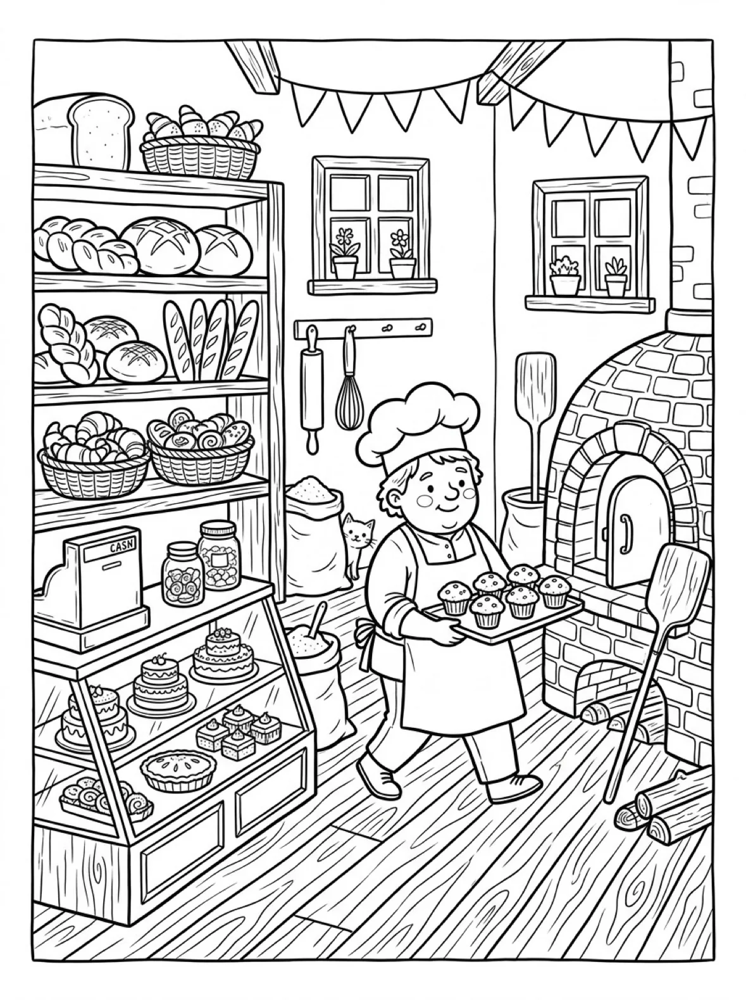
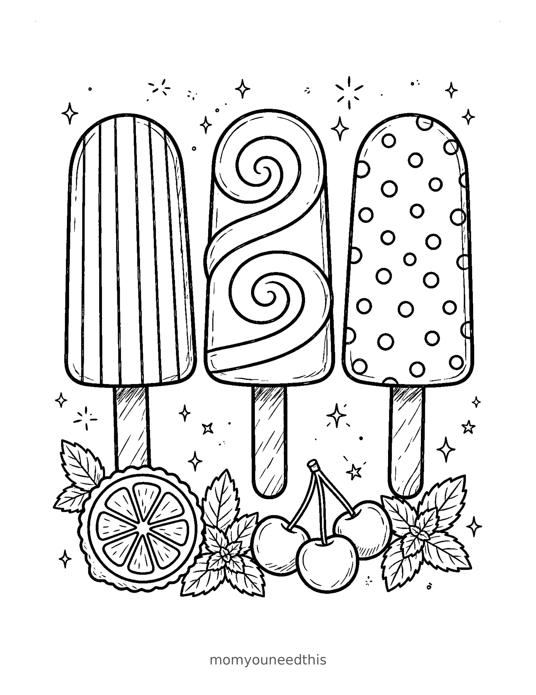
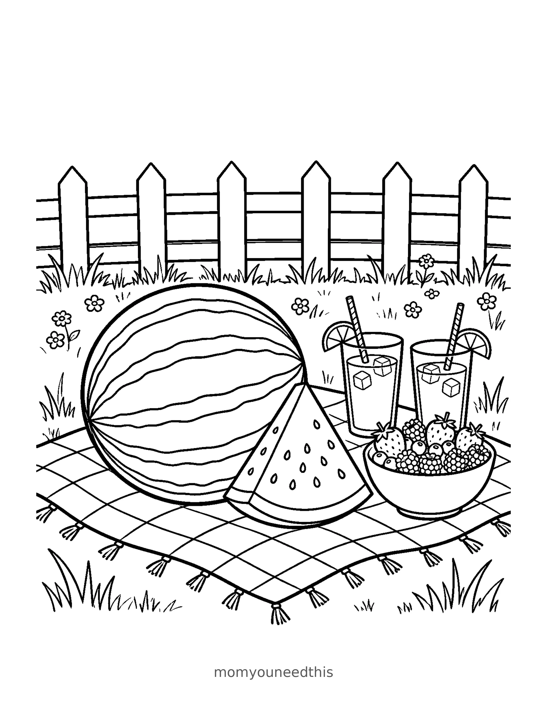

Free Food Coloring Pages
Looking for fun food coloring pages for kids? Download our free original food coloring page below — no signup needed. Just tap download, print, and let the coloring fun begin! Find fruits, vegetables, desserts, snacks, and favorite foods that are perfect for toddlers, preschoolers, and kids learning about food.
Last updated:
Quick Answer
Ten free food coloring pages are ready to print here, starting with a mixed food sheet, then strawberry, sushi, boba tea, a farmers market, a picnic, a bakery, a popsicle, watermelon and banana pages. They suit toddlers, preschoolers and kids learning about food — just download, print and start coloring, no signup needed.
At a Glance
- Ages: Toddlers, preschoolers and kids
- Pages: 10 free printables
- Format: Print at home, letter size
- Cost: Free, no signup
- Supplies: Crayons or markers
- Time: 10–20 minutes
🍕 Food Coloring Pages

🎨 Download Your Free Food Coloring Page
A cute, original food coloring page made for little hands — bold outlines, big spaces, zero signup.
⬇️ Download Free Coloring Page 🖨️ Print🎁 Free printable for toddlers & preschoolers
🍓 Strawberry Coloring Page

🎨 Download the Strawberry Coloring Page
A smiling strawberry with rosy cheeks and tiny waving arms, with leaves on top and a tiny flower beside it — bold outlines, big spaces, zero signup.
⬇️ Download Strawberry Page 🖨️ Print Strawberry Page🎁 Free printable for toddlers & preschoolers
🍣 Sushi Coloring Page

🎨 Download the Sushi Coloring Page
A smiling sushi roll with tiny arms on a plate with a soy sauce dish and chopsticks — bold outlines, big spaces, zero signup.
⬇️ Download Sushi Page 🖨️ Print Sushi Page🎁 Free printable for toddlers & preschoolers
🧋 Boba Tea Coloring Page

🎨 Download the Boba Tea Coloring Page
A smiling boba tea cup with rosy cheeks, a wide straw, and round boba pearls, with a tiny heart above — bold outlines, big spaces, zero signup.
⬇️ Download Boba Tea Page 🖨️ Print Boba Tea Page🎁 Free printable for toddlers & preschoolers
🥕 Farmers Market Coloring Page

🎨 Download the Farmers Market Coloring Page
A busy farmers market stall piled with pumpkins, apples, fresh bread, jam jars, and crates of vegetables, with an old-fashioned produce scale hanging beside it — bold outlines, big spaces, zero signup.
⬇️ Download Farmers Market Page 🖨️ Print Farmers Market Page🎁 Free printable for toddlers & preschoolers
🧺 Picnic Coloring Page

🎨 Download the Picnic Coloring Page
A picnic blanket spread under a shady tree with sandwiches, a lattice-topped pie, a teapot, lemonade, and a basket of fruit — plus a bicycle resting against the trunk — bold outlines, big spaces, zero signup.
⬇️ Download Picnic Page 🖨️ Print Picnic Page🎁 Free printable for toddlers & preschoolers
🥐 Bakery Coloring Page

🎨 Download the Bakery Coloring Page
A cheerful baker carrying a tray of fresh muffins past a brick oven, with shelves of breads and croissants and a display case full of cakes and pies — and a tiny cat peeking out from behind the flour sack — bold outlines, big spaces, zero signup.
⬇️ Download Bakery Page 🖨️ Print Bakery Page🎁 Free printable for toddlers & preschoolers
🍧 Popsicle Coloring Page

🎨 Download the Popsicle Coloring Page
Three big ice pops on sticks — stripes, swirls and polka dots — with a lemon slice, cherries and mint leaves at their feet — bold outlines, big spaces, zero signup. These popsicle coloring pages are a summer-day favorite.
⬇️ Download Popsicle Page 🖨️ Print Popsicle Page🎁 Free printable for toddlers & preschoolers
🍉 Watermelon Coloring Page

🎨 Download the Watermelon Coloring Page
A whole watermelon and a fresh-cut slice on a picnic blanket, two glasses of lemonade and a bowl of berries alongside — bold outlines, big spaces, zero signup. A watermelon coloring page made for picnic weather.
⬇️ Download Watermelon Page 🖨️ Print Watermelon Page🎁 Free printable for toddlers & preschoolers
🍌 Banana Coloring Page
🎨 Download the Banana Coloring Page
A banana tree with a whole bunch of bananas hanging under its broad leaves, and one peeled banana waiting on the grass below — bold outlines, big spaces, zero signup. These banana coloring pages come straight off the tree.
⬇️ Download Banana Page 🖨️ Print Banana Page🎁 Free printable for toddlers & preschoolers
🖨️ How to Use This Activity Hub
Get started in minutes — everything here is free and made for busy parents.
- Pick an activity below. Browse the Food Coloring Pages collection and choose one that fits your child's mood today.
- Download it free. Every activity page includes a free printable download — no signup needed.
- Print and play together. Print at home, then learn side by side in short, fun sessions. The print button opens the full-size page in a new tab if you prefer to print from there.
- Come back for more. New printables are added regularly, so there is always something fresh to try.
🍎 Snack Time, Turned Into Learning
From apples and pizza slices to cupcakes and carrots, food coloring pages turn snack time into a playful learning moment.
Name each food together as your child colors it, talk about colors and tastes, and let food coloring pages spark easy conversations about fruits, vegetables, and favorite meals.
Print a fresh set for the kitchen table, a restaurant wait, or a rainy afternoon, and keep food coloring pages in your back pocket for any moment that needs a calm, screen-free activity. When the first set is finished, food coloring pages are easy to reprint, so the fun never has to stop.
See food printable for more.

🧁 Smiling Strawberries and Giggling Cupcakes
These cute food coloring pages feature smiling strawberries, giggling cupcakes, and cheerful pizza slices that little kids love to color.
The kawaii favorites go even cuter: cheerful sushi, blushing boba tea, and sleepy pancakes, each with a sweet little face kids can finish with rosy cheeks and sparkles.
The big outlines and friendly faces make cute food coloring pages a great pick for toddlers and preschoolers who are still learning to stay inside the lines.
Print a stack for playdates, party favors, or quiet time, and let cute food coloring pages bring a little sweetness to an ordinary afternoon. Tuck a finished page into a lunchbox or onto the fridge, and cute food coloring pages become a tiny celebration of your child's creativity.
See cute food sheet for more.
🍎 Name Foods, Sort Them, Talk About Taste
These food pictures to color feature yummy favourites — apples, pizza, ice cream, cupcakes, and broccoli. Each picture has one big food item with bold outlines for little hands. Print food pictures to color for a tasty colouring session.
Food pictures to color are a fun way to talk about healthy eating. Name the foods, sort them into fruits, vegetables, and treats, and talk about which ones help us grow strong. These food pictures to color make nutrition fun.
For a cooking-themed day, print food pictures to color and let kids colour the ingredients before helping in the kitchen. Finished pages make great kitchen decorations.
See food picture sheet for more.
❓ Food Coloring Pages FAQs
What activities are included in Food Coloring Pages?
This hub collects our free food coloring pages printables in one place. Pick any activity below to open its page, download the printable, and start learning.
Are these activities really free?
Yes — every printable on MomYouNeedThis is 100% free to download and print. No signup, no payment, just tap the download button.
How do I use these activities with my child?
Choose an activity, download and print it, and work through it together in short, playful sessions. Follow your child's lead and keep it fun.
What can kids color in food coloring pages?
These food coloring pages include fruits, vegetables, snacks, desserts, and everyday meals, so kids can color everything from strawberries and broccoli to pizza and ice cream.
Are cute food coloring pages good for toddlers?
Yes — cute food coloring pages are great for toddlers because the big shapes, bold outlines, and happy faces are easy for little hands to color.
Where can I find coloring pages of food to print?
You can find coloring pages of food to print right here on this page — download the free printable, print it at home, and start coloring right away.
Are printable food coloring pages really free?
Yes — printable food coloring pages on this page are 100% free to download and print, with no signup and no payment needed.
Are these food pictures to color free to print?
Yes — these food pictures to color are 100% free to download and print at home. No signup or payment needed.
What is kawaii food on these kawaii food coloring pages?
Kawaii means cute in Japanese. These kawaii food coloring pages feature foods with sweet smiling faces — strawberries, sushi, boba, pancakes, and more — all with bold outlines for easy colouring.
Are there popsicle coloring pages, a watermelon coloring page and banana coloring pages here?
Yes — this page now includes popsicle coloring pages (three patterned ice pops with a lemon slice and cherries), a watermelon coloring page (a whole melon and a fresh slice on a picnic blanket) and banana coloring pages (a banana tree with one peeled banana below). All are free to download and print — no signup needed.
🔗 More Free Printables You’ll Love
Pair this printable with more free learning activities from the MomYouNeedThis library.
- 🔤 Alphabet Coloring PagesFree A to Z alphabet coloring printables for toddlers and preschoolers.
- 🎏 Free Back to School Coloring PagesFree back to school coloring pages printable for toddlers and preschoolers.
- 🎏 Free Bug & Insect Coloring PagesFree bug & insect coloring pages printable for toddlers and preschoolers.
- 🎏 Free Christmas Coloring PagesFree christmas coloring pages printable for toddlers and preschoolers.
- 🥪 Kids Lunch Ideas52 easy lunch ideas for school, toddlers and picky eaters — each one with a real photo.